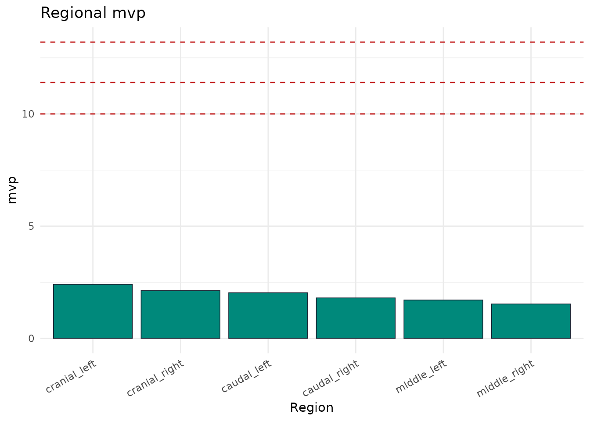

Equine Saddle Pressure Analysis with pressR
Source:vignettes/saddle-pressure-analysis.Rmd
saddle-pressure-analysis.RmdSaddle-pressure mapping using capacitive sensor mats has been used extensively in the equine back-health literature (Werner et al. 2002; Moenkemoeller et al. 2005; von Peinen et al. 2010). This vignette walks through a typical analysis.
Load the saddle layout
layout <- pr_layout_saddle("horse")
names(layout$regions)
#> [1] "cranial_left" "cranial_right" "middle_left" "middle_right"
#> [5] "caudal_left" "caudal_right"Load a synthetic trial
trial <- pr_example_trial("saddle_horse")
trial
#>
#> ── pr_trial ────────────────────────────────────────────────────────────────────
#> • System: "saddle_mat"
#> • Layout: "saddle_horse"
#> • Frames: 500
#> • Duration: 10 s
#> • Sampling: 50 Hz
#> • Sensors: 248
#> • Subject: "HORSE01"
#> • Date: "2026-04-17"
#> • Condition: "walk"Regional analysis with reference thresholds
masks <- pr_mask_saddle_6(layout)
reg <- pr_calc_regional(trial, masks)
reg
#> # A tibble: 6 × 6
#> region mpp mvp max_force contact_area pti_mean
#> <chr> <dbl> <dbl> <dbl> <dbl> <dbl>
#> 1 cranial_left 18.4 2.41 105. 330 17.7
#> 2 cranial_right 16.5 2.13 94.7 320 15.5
#> 3 middle_left 12.0 1.71 82.4 370 12.7
#> 4 middle_right 10.4 1.53 73.2 370 11.2
#> 5 caudal_left 18.3 2.03 113. 430 14.4
#> 6 caudal_right 15.6 1.80 100. 410 12.6
pr_plot_regional_bar(reg, "mvp", thresholds = pr_ref_saddle())
Bridge detection
bridge <- pr_calc_saddle_bridge(trial)
bridge
#>
#> ── Saddle Bridge Analysis ──
#>
#> • Bridge ratio: 0.773
#> • Bridging: FALSE
#> Pressure distribution appears continuous across the saddle (ratio = 0.77).Slip / asymmetric loading
slip <- pr_calc_saddle_slip(trial)
slip$symmetry_index_mean
#> [1] 10.97069
slip$dominant_side
#> [1] "balanced"